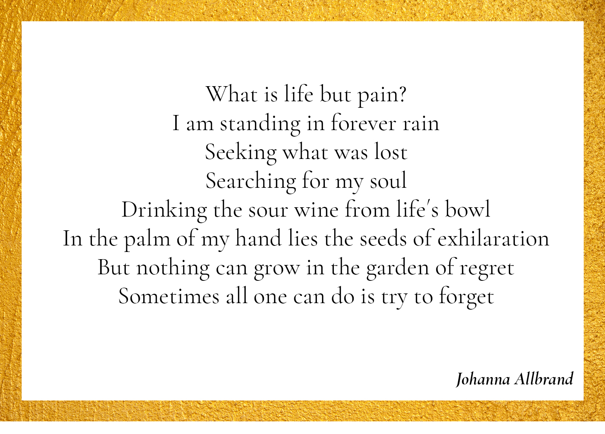
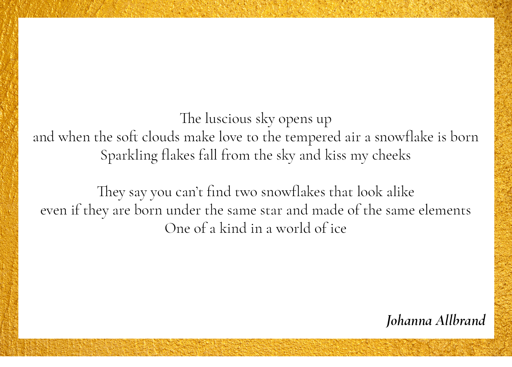
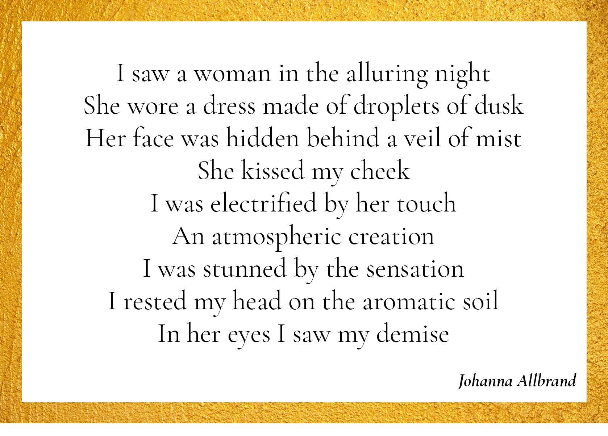
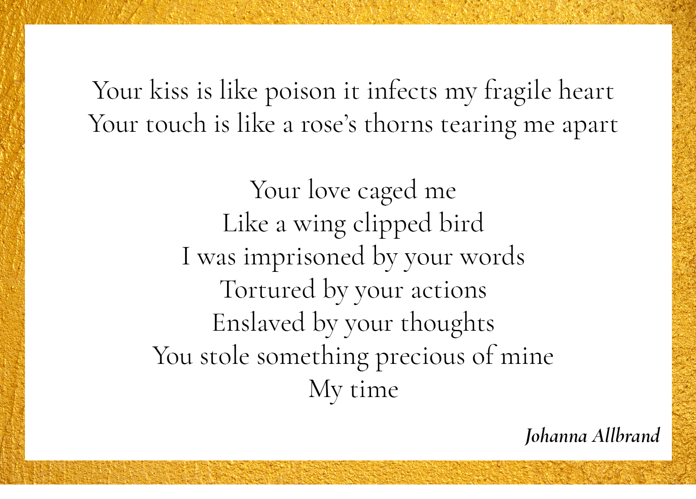
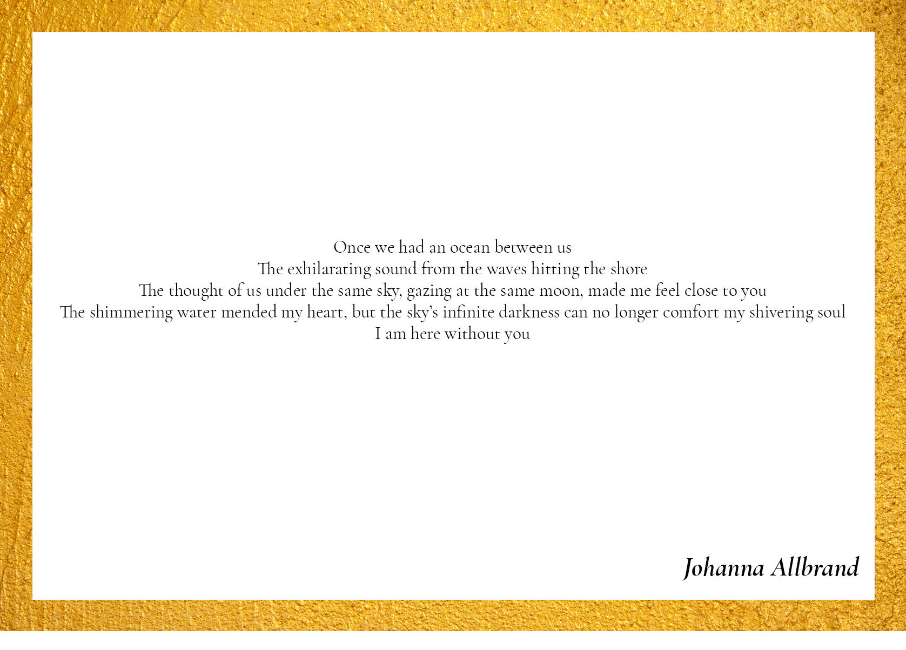
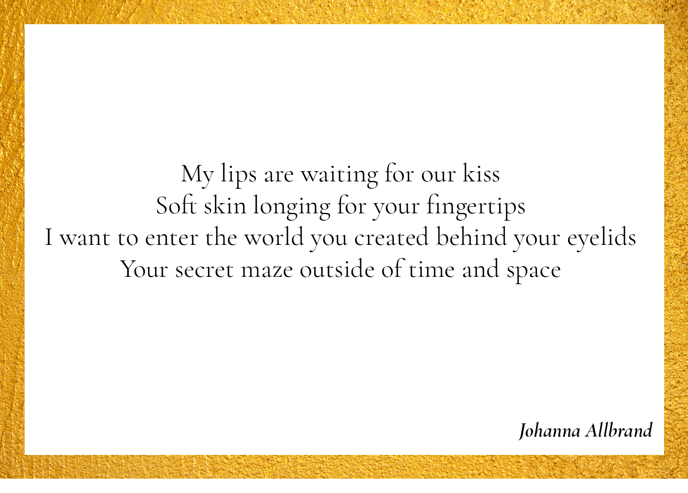

Fragments of Love

The notes within our hearts creating beautiful music even when we’re apart
Force of Nature

In the Garden of Regret
World Of Ice
On a Winter's Night

Waves of Flirtation

Essence of Love

My Love

I Saw a Woman in the Alluring Night
Essence of Time
Ocean
Ode to Life
![dikt: Ode to Life
Sometimes you’ll feel saddened when a pleasuring moment fades away
You’ll store it in your body and mind and it will be imprinted in your heart and soul
And as the years go by you’ll relive the things that you once felt
The amorous roses in the garden of spring
The first kiss under a butterfly’s wings
The summer breeze and the day with a clear blue sky
The day a loved one made you cry
The autumn’s veil
The mist of winter covers the shades of grey and a memory will with time decay
Like the butterfly now resting his wings on shimmering snow](fragmentsVykort/odeToLife.jpg)
Seduction
I Once Sang of Love